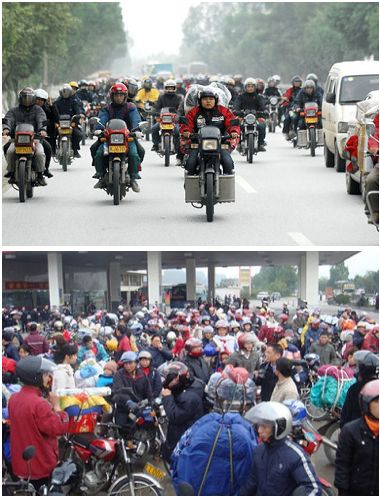

又下雪了 @ Feb 11, 2010
早晨醒来，外面有车胎碾过zzzzzzz的声音，拉开窗帘一看，果真有积雪啊！邻居家的车把手冻住了，我的雨刮器冻住了...上班的路上，几乎每辆车的时速在20公里左右，偶见一两个二五份子，车速和平时差不多，但轮胎明显打滑。
有个二五开着一辆老款凯迪拉克，挺快的速度开过来，上冻的冰雪使其从正方向行驶变成侧冲，我正好在其侧冲过来的位置...要过年了，谁也不想这时候把车送进去修。好在那个二五拼命打方向，车头又回正了。我觉得这种天气脚下给油如此快的二五，平时做事情肯定也不靠谱。我们一般对这种横冲直撞不靠谱的开车人直接送上一句：“赶着烧头炉啊~”
今天汽车和飞机会晚点，真为那些赶路的人担心。想着珠三角10万农民工骑摩托车返乡过年，挺不是滋味儿的~省钱是其次，体面回家为先，这种选择实属无奈。

6 Responses to “又下雪了”
2010-02-11
我的车昨晚就不知被谁刮了个外伤,都露红底了.
2010-02-11
慰问一下~那你得开着见红底的车回乡了？
2010-02-11
我今天开着车，扭着小秧歌，象在农村的小土路上着哼哧哼哧一颠一颠，踩着点刹地到了公司。
2010-02-11
“赶着烧头炉啊~”爽~~那种人就欠骂
2010-02-11
这种天气脚下给油如此快的二五，平时做事情肯定也不靠谱…..
人生哲理哦
中午送同事去火车站，黑龙江路的一半成了中央门长途车的停车场。中央门立交下长途站前如08年初大雪的广州车站情景。想想真作孽。
早晨就在想怎么市政府反应这么慢，听到新闻才知道原来公仆们凌晨5点还在忙申奥大事，理解。
这两天D.C.下雪1米五左右，交通近于瘫痪。不过他们可是凌晨五点就开始扫雪了。这大概就是差距。
明天路面肯定结冰，现在路况不错，有事的赶快办吧！
2010-02-11
忘了说一句，下雪天的车要及时洗，尤其是底盘裸露部位、车体下边缘。撒过盐的雪水腐蚀性强
Leave A Reply
存档只读，评论已关闭。